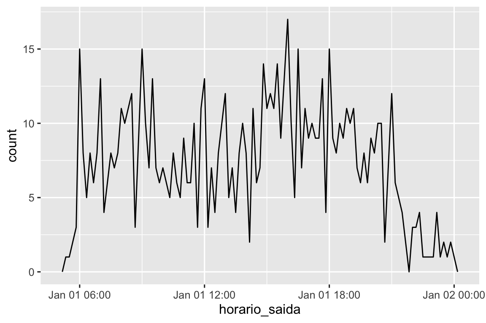
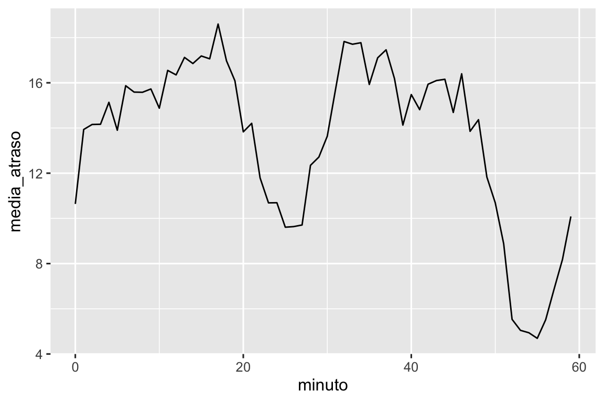
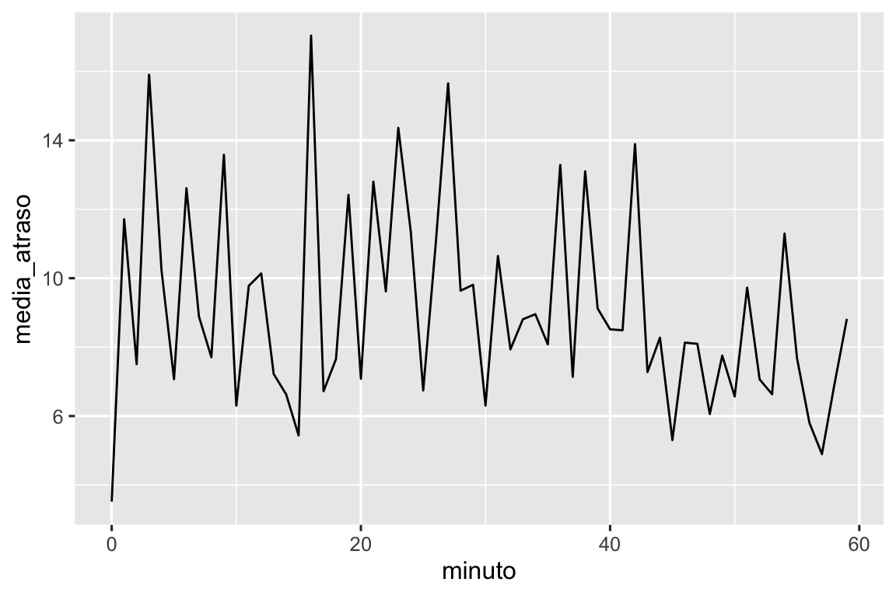
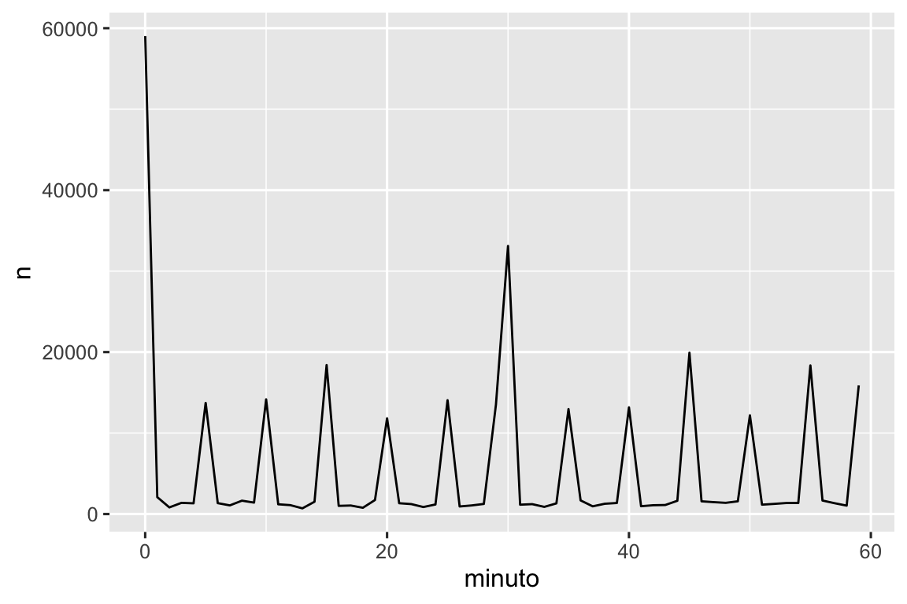
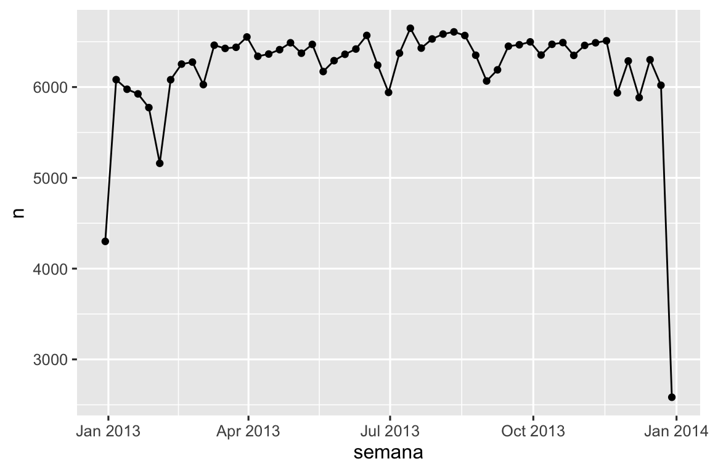
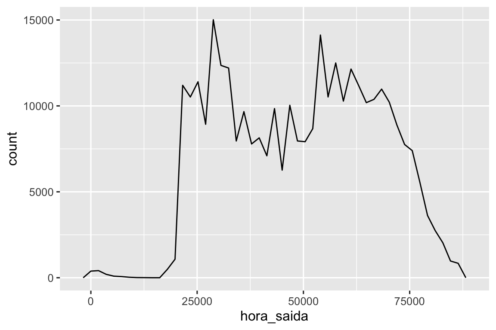

17 Datas e horários
17.1 Introdução
Este capítulo mostrará como trabalhar com datas e horários (dates and times) no R. À primeira vista, datas e horários parecem simples. Você os utiliza o tempo todo em sua vida e eles não parecem causar muita confusão. Porém, quanto mais você aprende sobre datas e horários, mais complicados eles parecem ficar!
Para aquecer, pense em quantos dias há em um ano e quantas horas há em um dia. Você provavelmente se lembrou que a maioria dos anos tem 365 dias, mas os anos bissextos têm 366. Você sabe a regra completa para determinar se um ano é bissexto1? O número de horas em um dia é um pouco menos óbvio: a maioria dos dias tem 24 horas, mas em lugares que usam horário de verão (DST), um dia a cada ano tem 23 horas e outro tem 25.
Datas e horários são difíceis porque têm de conciliar dois fenômenos físicos (a rotação da Terra e a sua órbita em torno do Sol) com uma série de fenômenos geopolíticos, incluindo meses, fusos horários e horário de verão. Este capítulo não ensinará todos os detalhes sobre datas e horários, mas fornecerá uma base sólida de habilidades práticas que te ajudarão com desafios comuns de análise de dados.
Começaremos mostrando como criar datas e horários a partir de várias entradas e, depois que você tiver uma data e hora, como extrair componentes como ano, mês e dia. Em seguida, mergulharemos no tópico complicado de trabalhar com intervalos de tempo, que vêm em uma variedade de formas, dependendo do que você está tentando fazer. Concluiremos com uma breve discussão sobre os desafios adicionais impostos pelos fusos horários.
17.1.1 Pré-requisitos
Este capítulo se concentrará no pacote lubridate, que facilita o trabalho com datas e horários no R. Na versão mais recente do tidyverse, o lubridate passou a ser um pacote principal do tidyverse. Para praticar, também precisaremos do conjunto de dados voos do pacote dados.
17.2 Criando datas/horários
Existem três tipos de dados de data/horário que se referem a um instante no tempo:
Uma data. Tibbles imprimem isso como
<date>.Um horário dentro de um dia. Tibbles imprimem isso como
<time>.Uma data-hora é uma data mais um horário: identifica exclusivamente um instante no tempo (tipicamente até o segundo mais próximo). Tibbles imprimem isso como
<dttm>. O R base chama isso de POSIXct, mas não é exatamente fácil de pronunciar.
Neste capítulo iremos nos concentrar nas classes data (date) e data-hora (date-time), já que o R não possui uma classe nativa para lidar apenas com horário (time). Se você precisar de uma, pode usar o pacote hms.
Você deve sempre usar o tipo de dado mais simples possível que funcione para suas necessidades. Isso significa que, se você puder usar uma data em vez de uma data-horário, você deve. Datas-hora são substancialmente mais complicadas devido à necessidade de lidar com fusos horários, o que abordaremos no final do capítulo.
Para obter a data ou data-hora atual, você pode usar today() ou now():
Caso contrário, as seções a seguir descrevem as quatro maneiras mais prováveis de criar uma data/hora:
- Durante a leitura de um arquivo com o pacote readr.
- A partir de um texto (string).
- A partir de componentes individuais de data/hora.
- A partir de um objeto de data/hora existente.
17.2.1 Durante a importação
Se o seu CSV contiver uma data ou data/hora no formato ISO8601, você não precisa fazer nada; o readr reconhecerá automaticamente:
csv <- "
date,datetime
2022-01-02,2022-01-02 05:12
"
read_csv(csv)
#> # A tibble: 1 × 2
#> date datetime
#> <date> <dttm>
#> 1 2022-01-02 2022-01-02 05:12:00Se você nunca ouviu falar do ISO8601 antes, é um padrão internacional2 para escrever datas onde os componentes de uma data são organizados do maior para o menor, separados por -. Por exemplo, no ISO8601, 3 de maio de 2022 é 2022-05-03. As datas ISO8601 também podem incluir horários, onde hora, minuto e segundo são separados por :, e os componentes de data e hora são separados por um T ou um espaço. Por exemplo, você poderia escrever 16:26 do dia 3 de maio de 2022 como 2022-05-03 16:26 ou 2022-05-03T16:26.
Para outros formatos de data e horário, você precisará usar col_types com col_date() ou col_datetime() junto com um formato de data e horário. O formato de data e horário usado pelo pacote readr é um padrão usado em muitas linguagens de programação, descrevendo um componente de data com um % seguido por um único caractere. Por exemplo, %Y-%m-%d especifica uma data que é um ano, -, mês (como número) -, dia. A tabela Tabela 17.1 lista todas as opções.
| Tipo | Código | Significado | Exemplo |
|---|---|---|---|
| Ano | %Y |
Ano com 4 digitos | 2021 |
%y |
Ano com 2 digitos | 21 | |
| Mês | %m |
Número | 2 |
%b |
Nome abreviado | Feb | |
%B |
Nome completo | February | |
| Dia | %d |
Um ou dois digitos | 2 |
%e |
Dois digitos | 02 | |
| Horário | %H |
Horas em 24-horas | 13 |
%I |
Horas em 12-horas | 1 | |
%p |
AM/PM | pm | |
%M |
Minutos | 35 | |
%S |
Segundos | 45 | |
%OS |
Seconds com decimal | 45.35 | |
%Z |
Nome fuso horário | America/Chicago | |
%z |
Ajuste (offset) de UTC | +0800 | |
| Outras | %. |
Pula um não digito | : |
%* |
Pula qualquer número de não digito |
E este código mostra algumas opções aplicadas a uma data muito ambígua:
csv <- "
date
01/02/15
"
read_csv(csv, col_types = cols(date = col_date("%m/%d/%y")))
#> # A tibble: 1 × 1
#> date
#> <date>
#> 1 2015-01-02
read_csv(csv, col_types = cols(date = col_date("%d/%m/%y")))
#> # A tibble: 1 × 1
#> date
#> <date>
#> 1 2015-02-01
read_csv(csv, col_types = cols(date = col_date("%y/%m/%d")))
#> # A tibble: 1 × 1
#> date
#> <date>
#> 1 2001-02-15Observe que não importa como você especifica o formato da data, ela sempre será exibida da mesma maneira quando você o inserir no R.
Se você estiver usando %b ou %B e trabalhando com datas em idiomas diferentes do inglês, também precisará fornecer um locale(). Veja a lista de idiomas integrados em date_names_langs(), ou crie o seu próprio com date_names(),
17.2.2 A partir de strings
A linguagem de especificação de data e horário é poderosa, mas requer uma análise cuidadosa do formato da data. Uma abordagem alternativa é usar os auxiliares do pacote lubridate que tentam determinar automaticamente o formato assim que você especifica a ordem do componente. Para usá-los, identifique a ordem em que ano (year), mês (month) e dia (day) aparecem em suas datas e organize “y”, “m” e “d” na mesma ordem. Isso lhe dá o nome da função lubridate que interpretará sua data. Por exemplo:
ymd() e funções similares criam datas. Para criar uma data-hora, adicione um underscore (_) e uma ou mais de “h”, “m” e “s” ao nome da função de análise (parsing):
Você também pode forçar a criação de uma data-hora a partir de uma data fornecendo um fuso horário:
ymd("2017-01-31", tz = "UTC")
#> [1] "2017-01-31 UTC"Aqui eu uso o fuso horário UTC3 que você também pode conhecer como GMT, ou Greenwich Mean Time, o horário em 0° de longitude4. Ele não usa o horário de verão, o que torna os cálculos um pouco mais simples.
17.2.3 A partir de componentes individuais
Em vez de uma única string, às vezes você terá os componentes individuais da data-hora espalhados por várias colunas. Isso é o que temos nos dados voos:
voos |>
select(ano, mes, dia, hora, minuto)
#> # A tibble: 336,776 × 5
#> ano mes dia hora minuto
#> <int> <int> <int> <dbl> <dbl>
#> 1 2013 1 1 5 15
#> 2 2013 1 1 5 29
#> 3 2013 1 1 5 40
#> 4 2013 1 1 5 45
#> 5 2013 1 1 6 0
#> 6 2013 1 1 5 58
#> # ℹ 336,770 more rowsPara criar uma data/horário a partir deste tipo de entrada, use a função make_date() para datas, ou make_datetime() para data-hora:
voos |>
select(ano, mes, dia, hora, minuto) |>
mutate(saida = make_datetime(ano, mes, dia, hora, minuto))
#> # A tibble: 336,776 × 6
#> ano mes dia hora minuto saida
#> <int> <int> <int> <dbl> <dbl> <dttm>
#> 1 2013 1 1 5 15 2013-01-01 05:15:00
#> 2 2013 1 1 5 29 2013-01-01 05:29:00
#> 3 2013 1 1 5 40 2013-01-01 05:40:00
#> 4 2013 1 1 5 45 2013-01-01 05:45:00
#> 5 2013 1 1 6 0 2013-01-01 06:00:00
#> 6 2013 1 1 5 58 2013-01-01 05:58:00
#> # ℹ 336,770 more rowsVamos fazer a mesma coisa para cada uma das quatro colunas de tempo em voos. Os horários são representados em um formato particular, por isso usamos a aritmética de módulo para extrair os componentes de hora e minuto. Depois de criarmos as variáveis de data e horário, nos concentraremos nas variáveis que exploraremos no restante do capítulo.
make_datetime_100 <- function(ano, mes, dia, horario) {
make_datetime(ano, mes, dia, horario %/% 100, horario %% 100)
}
voos_dt <- voos |>
filter(!is.na(horario_saida), !is.na(horario_chegada)) |>
mutate(
horario_saida = make_datetime_100(ano, mes, dia, horario_saida),
horario_chegada = make_datetime_100(ano, mes, dia, horario_chegada),
saida_programada = make_datetime_100(ano, mes, dia, saida_programada),
chegada_prevista = make_datetime_100(ano, mes, dia, chegada_prevista)
) |>
select(origem, destino, starts_with("atraso"),
horario_saida, saida_programada,
horario_chegada, chegada_prevista,
tempo_voo)Com esses dados, podemos visualizar a distribuição dos horários de partida ao longo do ano:
voos_dt |>
ggplot(aes(x = horario_saida)) +
geom_freqpoly(binwidth = 86400) # 86400 segundos = 1 dia
Ou dentro de um único dia:
voos_dt |>
filter(horario_saida < ymd(20130102)) |>
ggplot(aes(x = horario_saida)) +
geom_freqpoly(binwidth = 600) # 600 s = 10 minutos
Observe que quando você usa datas-hora em um contexto numérico (como em um histograma), 1 significa 1 segundo, então uma largura de intervalo de classe (bin) de 86400 significa um dia. Para datas, 1 significa 1 dia.
17.2.4 A partir de outros tipos
Você pode querer alternar entre uma data e horário (date-times) e uma data (date). Esse é o trabalho ds funções as_datetime() e as_date():
as_datetime(today())
#> [1] "2025-04-21 UTC"
as_date(now())
#> [1] "2025-04-21"Às vezes, você obterá datas/horários como deslocamentos (offsets) numéricos a partir da “Era Unix” (Unix Epoch), 01/01/1970. Se o deslocamento (offset) estiver em segundos, use as_datetime(); se for em dias, use as_date().
as_datetime(60 * 60 * 10)
#> [1] "1970-01-01 10:00:00 UTC"
as_date(365 * 10 + 2)
#> [1] "1980-01-01"17.2.5 Exercícios
- O que acontece se você analisar uma string que contém datas inválidas?
O que o argumento
tzonepara a funçãotoday()faz? Por que ele é importante?Para cada uma das seguintes datas/horários, mostre como você os analisaria usando uma especificação de coluna do readr e uma função do lubridate.
d1 <- "January 1, 2010"
d2 <- "2015-Mar-07"
d3 <- "06-Jun-2017"
d4 <- c("August 19 (2015)", "July 1 (2015)")
d5 <- "12/30/14" # Dec 30, 2014
t1 <- "1705"
t2 <- "11:15:10.12 PM"17.3 Componentes de data-hora
Agora que você sabe como inserir dados de data e horário (date time) nas estruturas de dados de data e horário do R, vamos explorar o que você pode fazer com eles. Esta seção se concentrará nas funções que permitem obter e definir componentes individuais. A próxima seção abordará como a aritmética funciona com datas e horários.
17.3.1 Obtendo componentes
Você pode extrair partes individuais da data com as funções de acesso year(), month(), mday() (dia do mês), yday() (dia do ano), wday() (dia da semana), hour(), minute() e second(). Essas são efetivamente o oposto de make_datetime().
Para month() e wday() você pode definir label = TRUE para retornar o nome abreviado do mês ou dia da semana. Defina abbr = FALSE para retornar o nome completo.
Podemos usar wday() para ver que mais voos partem durante a semana do que no fim de semana:

Podemos também observar o atraso médio de partida por minuto dentro da hora. Há um padrão interessante: voos que partem nos minutos 20-30 e 50-60 têm atrasos muito menores do que o resto da hora!
voos_dt |>
mutate(minuto = minute(horario_saida)) |>
group_by(minuto) |>
summarize(
media_atraso = mean(atraso_saida, na.rm = TRUE),
n = n()
) |>
ggplot(aes(x = minuto, y = media_atraso)) +
geom_line()
Curiosamente, se olharmos para o horário de saída programado, não veremos um padrão tão forte:
chegada_prevista <- voos_dt |>
mutate(minuto = minute(saida_programada)) |>
group_by(minuto) |>
summarize(
media_atraso = mean(atraso_chegada, na.rm = TRUE),
n = n()
)
ggplot(chegada_prevista, aes(x = minuto, y = media_atraso)) +
geom_line()
Então, por que vemos esse padrão com os horários reais de partida? Bem, como muitos dados coletados por humanos, há um forte viés em relação aos voos que partem em horários de partida “agradáveis”, como mostra Figura 17.1. Esteja sempre atento a esse tipo de padrão sempre que trabalhar com dados que envolvem julgamento humano!

17.3.2 Arredondamento
Uma abordagem alternativa para plotar componentes individuais é arredondar a data para uma unidade de tempo próxima, com floor_date(), round_date() e ceiling_date(). Cada função tem como argumento um vetor de datas para ajustar e o nome da unidade de tempo para arredondar para baixo (floor), para cima (ceiling) ou para simplesmente arredondar para a data sem mover para cima ou para baixo. Isto, por exemplo, permite-nos criar um gráfico com o número de voos por semana:
voos_dt |>
count(semana = floor_date(horario_saida, "week")) |>
ggplot(aes(x = semana, y = n)) +
geom_line() +
geom_point()
Você pode usar o arredondamento para visualizar a distribuição de voos ao longo de um dia, calculando a diferença entre horario_saida e o primeiro instante daquele dia:
voos_dt |>
mutate(hora_saida = horario_saida - floor_date(horario_saida, "day")) |>
ggplot(aes(x = hora_saida)) +
geom_freqpoly(binwidth = 60 * 30)
#> Don't know how to automatically pick scale for object of type <difftime>.
#> Defaulting to continuous.
Calcular a diferença entre um par de variáveis data-horário produz um objeto difftime (mais sobre isso na Seção 17.4.3). Podemos converter isso em um objeto hms para obter um eixo x mais útil:
voos_dt |>
mutate(hora_saida = hms::as_hms(horario_saida - floor_date(horario_saida, "day"))) |>
ggplot(aes(x = hora_saida)) +
geom_freqpoly(binwidth = 60 * 30)
17.3.3 Modificando componentes
Você também pode usar cada função de acesso para modificar os componentes de uma data/horário. Isso não aparece muito na análise de dados, mas pode ser útil ao limpar dados que possuem datas que claramente estão incorretas.
Alternativamente, em vez de modificar uma variável existente, você pode criar uma nova data-hora com update(). Isso também permite definir vários valores em uma etapa:
update(datetime, year = 2030, month = 2, mday = 2, hour = 2)
#> [1] "2030-02-02 02:34:56 UTC"Se os valores forem muito grandes, eles serão arredondados:
17.3.4 Exercícios
Como a distribuição dos horários de voo ao longo do dia muda ao longo do ano?
Compare
horario_saida,saida_programadaeatraso_saida. Eles são consistentes? Explique suas descobertas.Compare
air_timecom a duração entre a partida e a chegada. Explique suas descobertas. (Dica: considere a localização do aeroporto.)Como o tempo médio de atraso muda ao longo do dia? Você deve usar
horario_saidaousaida_programada? Por quê?Em que dia da semana você deve partir se quiser minimizar a chance de um atraso?
O que torna a distribuição de
diamante$quilatesevoos$saida_programadasemelhante?Confirme a nossa hipótese de que as saídas antecipadas dos voos nos minutos 20-30 e 50-60 são causadas por voos regulares que partem mais cedo. Dica: crie uma variável binária que informe se um voo atrasou ou não
17.4 Intervalos de tempo
A seguir, você aprenderá como funciona a aritmética com datas, incluindo subtração, adição e divisão. Ao longo do caminho, você aprenderá sobre três classes importantes que representam intervalos de tempo:
- Duração (durations), que representa um número exato de segundos.
- Períodos (periods), que representam unidades como semanas e meses
- Intervalos (intervals), que representam um ponto inicial e final.
Como você escolhe entre duração, períodos e intervalos? Como sempre, escolha a estrutura de dados mais simples que resolva seu problema. Se você se preocupa apenas com o tempo físico, use uma duração; se você precisar adicionar períodos de tempo, use um período; se você precisar descobrir quanto tempo dura um intervalo entre unidades, use um intervalo.
17.4.1 Durações
No R, ao subtrair duas datas, você obtém um objeto de intervalo de tempo da classe difftime:
Um objeto de classe difftime registra um intervalo de tempo de segundos, minutos, horas, dias ou semanas. Essa ambiguidade pode tornar os difftimes um pouco complicados de lidar, então o pacote lubridate fornece uma alternativa que sempre usa segundos: a duração (duration).
as.duration(h_age)
#> [1] "1436486400s (~45.52 years)"Durações vêm com um monte de construtores convenientes:
dseconds(15)
#> [1] "15s"
dminutes(10)
#> [1] "600s (~10 minutes)"
dhours(c(12, 24))
#> [1] "43200s (~12 hours)" "86400s (~1 days)"
ddays(0:5)
#> [1] "0s" "86400s (~1 days)" "172800s (~2 days)"
#> [4] "259200s (~3 days)" "345600s (~4 days)" "432000s (~5 days)"
dweeks(3)
#> [1] "1814400s (~3 weeks)"
dyears(1)
#> [1] "31557600s (~1 years)"Durações sempre registram o intervalo de tempo em segundos. Unidades maiores são criadas convertendo minutos, horas, dias, semanas e anos em segundos: 60 segundos em um minuto, 60 minutos em uma hora, 24 horas em um dia e 7 dias em uma semana. Unidades de tempo maiores são mais problemáticas. Um ano usa o número “médio” de dias em um ano, ou seja, 365,25. Não há como converter um mês em uma duração, porque há muita variação.
Você pode adicionar e multiplicar durações:
Você pode adicionar e subtrair durações de dias:
No entanto, como as durações representam um número exato de segundos, às vezes você pode obter um resultado inesperado:
Por que um dia após 1h de 8 de março é 2h de 9 de março? Se você olhar atentamente para a data, também poderá notar que os fusos horários mudaram. O dia 8 de março tem apenas 23 horas porque é quando o horário de verão (DST) começa, então se adicionarmos um dia inteiro em segundos, acabamos com um horário diferente.
17.4.2 Períodos
Para resolver esse problema, a lubridate fornece períodos (periods). Os períodos são intervalos de tempo, mas não têm uma duração fixa em segundos; em vez disso, funcionam com tempos “humanos”, como dias e meses. Isso permite que funcionem de forma mais intuitiva:
uma_da_manha
#> [1] "2026-03-08 01:00:00 EST"
uma_da_manha + days(1)
#> [1] "2026-03-09 01:00:00 EDT"Como durações, períodos podem ser criados com várias funções construtoras amigáveis.
Você pode adicionar e multiplicar períodos:
E claro, adicione-os às datas. Comparado às durações, os períodos são mais fáceis de fazer o que você espera:
Vamos usar períodos para corrigir uma peculiaridade relacionada às datas dos nossos voos. Alguns aviões parecem ter chegado ao seu destinoino antes de partirem da cidade de Nova York.
voos_dt |>
filter(horario_chegada < horario_saida)
#> # A tibble: 10,633 × 9
#> origem destino atraso_saida atraso_chegada horario_saida
#> <chr> <chr> <dbl> <dbl> <dttm>
#> 1 EWR BQN 9 -4 2013-01-01 19:29:00
#> 2 JFK DFW 59 NA 2013-01-01 19:39:00
#> 3 EWR TPA -2 9 2013-01-01 20:58:00
#> 4 EWR SJU -6 -12 2013-01-01 21:02:00
#> 5 EWR SFO 11 -14 2013-01-01 21:08:00
#> 6 LGA FLL -10 -2 2013-01-01 21:20:00
#> # ℹ 10,627 more rows
#> # ℹ 4 more variables: saida_programada <dttm>, horario_chegada <dttm>, …Estes são voos noturnos. Usamos as mesmas informações de data para os horários de partida e chegada, mas esses voos chegaram no dia seguinte. Podemos corrigir isso adicionando days(1) ao horário de chegada de cada voo noturno.
Agora todos os nossos voos obedecem às leis da física.
voos_dt |>
filter(horario_chegada < horario_saida)
#> # A tibble: 0 × 10
#> # ℹ 10 variables: origem <chr>, destino <chr>, atraso_saida <dbl>,
#> # atraso_chegada <dbl>, horario_saida <dttm>, saida_programada <dttm>, …17.4.3 Intervalos
O que dyears(1) / ddays(365) retorna? Não é exatamente 1, porque dyears() é definido como o número de segundos por ano de duração média, que é 365,25 dias.
O que anos(1)/dias(1) retorna? Bom, se o ano fosse 2015 deveria retornar 365, mas se fosse 2016 deveria retornar 366! Não há informações suficientes para o lubridate dar uma resposta única e clara. Em vez disso, o que ele faz é fornecer uma estimativa:
Se você quiser uma medição mais precisa, terá que usar um intervalo. Um intervalo é um par de datas e horários de início e término, ou você pode pensar nele como uma duração com um ponto de partida.
Você pode criar um intervalo escrevendo start %--% end:
Você poderia então dividi-lo por days() para descobrir quantos dias cabem no ano:
17.4.4 Exercícios
Explique
days(!overnight)edays(overnight)para alguém que acabou de começar a aprender R. Qual é o fato chave que você precisa saber?Crie um vetor de datas dando o primeiro dia de cada mês em 2015. Crie um vetor de datas dando o primeiro dia de cada mês no ano atual.
Escreva uma função que, dada a sua data de nascimento (como um objeto date), retorne quantos anos você tem em anos.
Por que
(today() %--% (today() + years(1))) / months(1)não funciona?
17.5 Fusos horários
Os fusos horários são um tópico enormemente complicado devido à sua interação com entidades geopolíticas. Felizmente, não precisamos nos aprofundar em todos os detalhes, pois nem todos são importantes para a análise de dados, mas há alguns desafios que precisaremos enfrentar de frente.
O primeiro desafio é que os nomes cotidianos dos fusos horários tendem a ser ambíguos. Por exemplo, se você é americano, provavelmente conhece EST, ou Eastern Standard Time. No entanto, tanto a Austrália quanto o Canadá também têm EST! Para evitar confusão, o R usa os fusos horários padrão internacional da IANA. Eles usam um esquema de nomenclatura consistente {area}/{local}, normalmente na forma {continent}/{cidade} ou {oceano}/{cidade}. Exemplos incluem “America/New_York”, “Europe/Paris” e “Pacific/Auckland”.
Você pode estar se perguntando por que o fuso horário usa uma cidade, quando normalmente você pensa nos fusos horários como associados a um país ou região dentro de um país. Isso ocorre porque o banco de dados da IANA precisa registrar décadas de regras de fuso horário. Ao longo das décadas, os países mudam de nome (ou se separam) com bastante frequência, mas os nomes das cidades tendem a permanecer os mesmos. Outro problema é que o nome precisa refletir não apenas o comportamento atual, mas também o histórico completo. Por exemplo, existem fusos horários para “America/New_York” e “America/Detroit”. Ambas as cidades usam atualmente o horário padrão do leste (EST), mas em 1969-1972 Michigan (o estado em que Detroit está localizada) não seguiu o horário de verão, por isso precisa de um nome diferente. Vale a pena ler o banco de dados bruto de fuso horário (disponível em https://www.iana.org/time-zones) apenas para ler algumas dessas histórias!
Você pode descobrir qual fuso horário o R pensa que é o seu atual usando a função Sys.timezone():
Sys.timezone()
#> [1] "America/Sao_Paulo"(Se o R não souber, você receberá um NA.)
Você também pode ver a lista completa de todos os nomes de fusos horários com OlsonNames():
length(OlsonNames())
#> [1] 597
head(OlsonNames())
#> [1] "Africa/Abidjan" "Africa/Accra" "Africa/Addis_Ababa"
#> [4] "Africa/Algiers" "Africa/Asmara" "Africa/Asmera"No R, o fuso horário é um atributo da data-hora que controla apenas a impressão. Por exemplo, esses três objetos representam o mesmo instante no tempo:
You can verify that they’re the same time using subtraction:
x1 - x2
#> Time difference of 0 secs
x1 - x3
#> Time difference of 0 secsA menos que especificado de outra forma, o lubridate sempre usa UTC. UTC (Tempo Universal Coordenado) é o fuso horário padrão usado pela comunidade científica e é aproximadamente equivalente ao GMT (Horário de Greenwich). Ele não possui horário de verão (DST), o que o torna uma representação conveniente para cálculos. Operações que combinam datas-horas, como c(), frequentemente descartam o fuso horário. Nesse caso, as datas-horas serão exibidas no fuso horário do primeiro elemento:
x4 <- c(x1, x2, x3)
x4
#> [1] "2024-06-01 12:00:00 EDT" "2024-06-01 12:00:00 EDT"
#> [3] "2024-06-01 12:00:00 EDT"Você pode alterar o fuso horário de duas maneiras:
-
Manter o instante no tempo o mesmo e alterar como ele é exibido. Use isso quando o instante estiver correto, mas você quiser uma exibição mais natural.
x4a <- with_tz(x4, tzone = "Australia/Lord_Howe") x4a #> [1] "2024-06-02 02:30:00 +1030" "2024-06-02 02:30:00 +1030" #> [3] "2024-06-02 02:30:00 +1030" x4a - x4 #> Time differences in secs #> [1] 0 0 0(Isso também ilustra outro desafio dos fusos horários: nem todos são deslocamentos de horas inteiras!)
- Alterar o instante subjacente no tempo. Use isso quando você tiver um instante que foi rotulado com o fuso horário incorreto e precisar corrigi-lo.
x4b <- force_tz(x4, tzone = "Australia/Lord_Howe") x4b #> [1] "2024-06-01 12:00:00 +1030" "2024-06-01 12:00:00 +1030" #> [3] "2024-06-01 12:00:00 +1030" x4b - x4 #> Time differences in hours #> [1] -14.5 -14.5 -14.5
17.6 Resumo
Este capítulo apresentou as ferramentas que o lubridate fornece para te ajudar a trabalhar com dados de data e hora. Trabalhar com datas e horários pode parecer mais difícil do que o necessário, mas espero que este capítulo tenha ajudado você a entender o porquê — datas e horários são mais complexas do que parecem à primeira vista, e lidar com todas as situações possíveis adiciona complexidade. Mesmo que seus dados nunca cruzem um limite de horário de verão ou envolvam um ano bissexto, as funções precisam ser capazes de lidar com isso.
O próximo capítulo faz um resumo dos valores ausentes (NA). Você os viu em alguns lugares e sem dúvida os encontrou em sua própria análise, e agora é hora de fornecer um conjunto de técnicas úteis para lidar com eles.
Um ano é bissexto se for divisível por 4, a menos que também seja divisível por 100, exceto se também for divisível por 400. Em outras palavras, em cada conjunto de 400 anos, há 97 anos bissextos.↩︎
Você pode se perguntar o que significa UTC. É um meio-termo entre o inglês “Coordinated Universal Time” e o francês “Temps Universel Coordonné”.↩︎
Sem prêmios para quem adivinhar qual país criou o sistema de longitude.↩︎